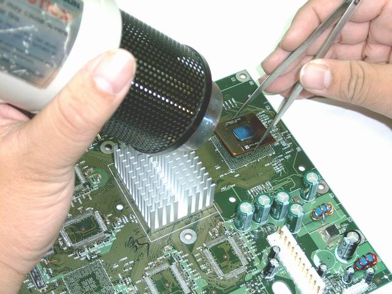
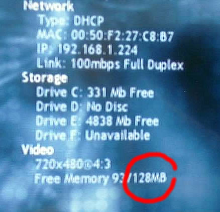

THE
ULTIMATE XBOX UPGRADE
Xbox Mainboard w/
128MB and 1.480GHz CPU (This haw been Discontinued) 10/15/2005
This is for
upgrading
the memory on an original Xbox from 64MB to 128MB, and CPU from 733Mhz
to 1400MHz shall significantly enhance the performance your Xbox, and
allowing it to do much more. However, memory and CPU upgrades on an
Xbox mainboard is not an easy task. It requires the onboard soldering
of two additional memory chips, and circuitry changes to the board,
which should be done only by professional technicians. There is a place
with this solution to offer the memory and CPU combo upgrade to the
masses of Xbox owners.
They offer replacement Xbox mainboard with memory already
upgraded to 128MB, and CPU to 1400MHz by the factory for only $199.95
if
you send in your original, working mainboard. If you choose to keep
your original board, the cost shall be $259.95.
This is called the FriendTech Model
DreamX-1480.
You can bring or ship your mainboard to them for the trade-in.
If you ship it to them, you must pay shipping both ways.
Specs: Modifcation on geuine
Microsoft Xbox main board with CPU changed from Intel PIII 733MHz to
Intel Celeron 1400MHz. Memory upgraded from 64MB to 128MB. S-Video and
A/V video. Dolby Digital 5.1 Surround Sound with optical fiber audio
port. External decoration skins included. The modified version does NOT
supports Xbox Live!
GET IT HERE!
You can get a regular Xbox with 128Mb of ram HERE
The additional
RAM will not increase game performance but will increase
Xbox Linux and the Friendtech Media Center along with the ability to
load larger game ROMs in emulators. This system will
work without a new bios but will not use the
additional memory. The latest Cromwell Bioses support 128 megs of RAM.
Pentium
III 733 Mhx - 256MB Cache

The stock 733Mhz is a 128KB Cache CPU.
Vidio I/O Chip With Heatsink

Xbox with 160GB HDD and ModChip installed.

Upgrading an XBox with the CPU and 128MB of Ram (Process Pic)

You can see the ram chip spots are vacant, as well as the GPU missing
from the mainboard. This one is in the process of being upgraded
with: (1) Pre-modded with
our Media Key modchip, (2)
128MB memory for system
& video, (3) Dolby
5.1 Surround Sound and Optical Fiber Audio Port. The M$Dash will
never access the extra 64Mb ram, only a mod chip will with a BIOS for
accessing the memory.
Micro-PGA2 socket for
the 1.48 GHz Tualatin Celeron

Information Screen After The Ram
Upgrade:

Switch for the 1.48Ghz CPU to run
at 733Mhz or 1.48Ghz